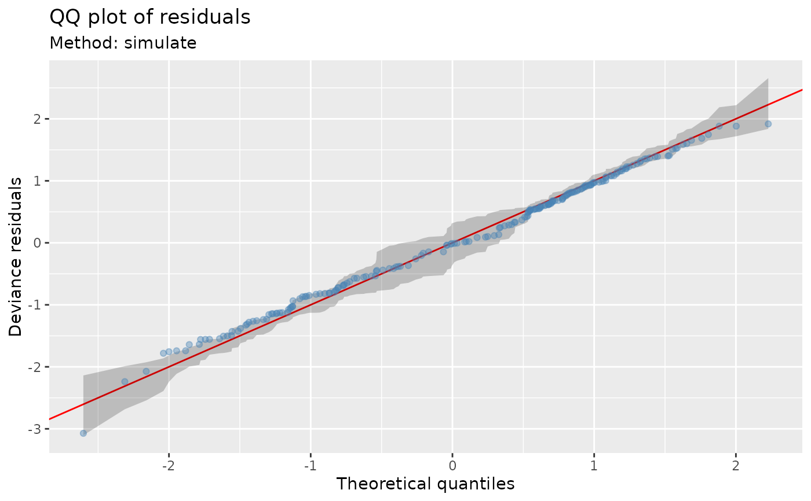
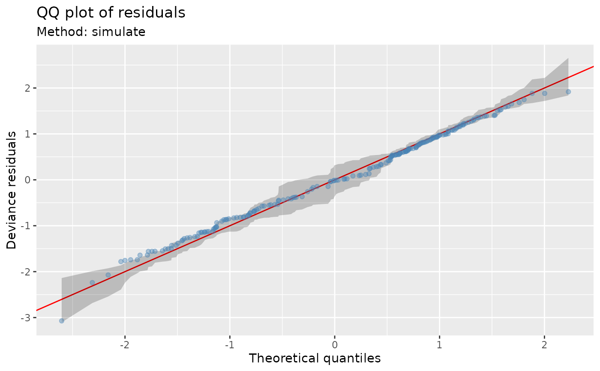

Quantile-quantile plot of model residuals
Usage
qq_plot(model, ...)
# Default S3 method
qq_plot(model, ...)
# S3 method for class 'gam'
qq_plot(
model,
method = c("uniform", "simulate", "normal", "direct"),
type = c("deviance", "response", "pearson"),
n_uniform = 10,
n_simulate = 50,
level = 0.9,
ylab = NULL,
xlab = NULL,
title = NULL,
subtitle = NULL,
caption = NULL,
ci_col = "black",
ci_alpha = 0.2,
point_col = "black",
point_alpha = 1,
line_col = "red",
...
)
# S3 method for class 'glm'
qq_plot(model, ...)
# S3 method for class 'lm'
qq_plot(model, ...)Arguments
- model
a fitted model. Currently only class
"gam".- ...
arguments passed ot other methods.
- method
character; method used to generate theoretical quantiles. Note that
method = "direct"is deprecated in favour ofmethod = "uniform".- type
character; type of residuals to use. Only
"deviance","response", and"pearson"residuals are allowed.- n_uniform
numeric; number of times to randomize uniform quantiles in the direct computation method (
method = "uniform").- n_simulate
numeric; number of data sets to simulate from the estimated model when using the simulation method (
method = "simulate").- level
numeric; the coverage level for reference intervals. Must be strictly
0 < level < 1. Only used withmethod = "simulate".- ylab
character or expression; the label for the y axis. If not supplied, a suitable label will be generated.
- xlab
character or expression; the label for the y axis. If not supplied, a suitable label will be generated.
- title
character or expression; the title for the plot. See
ggplot2::labs(). May be a vector, one per penalty.- subtitle
character or expression; the subtitle for the plot. See
ggplot2::labs(). May be a vector, one per penalty.- caption
character or expression; the plot caption. See
ggplot2::labs(). May be a vector, one per penalty.- ci_col
fill colour for the reference interval when
method = "simulate".- ci_alpha
alpha transparency for the reference interval when
method = "simulate".- point_col
colour of points on the QQ plot.
- point_alpha
alpha transparency of points on the QQ plot.
- line_col
colour used to draw the reference line.
Note
The wording used in mgcv::qq.gam() uses direct in reference to the
simulated residuals method (method = "simulated"). To avoid confusion,
method = "direct" is deprecated in favour of method = "uniform".
Examples
load_mgcv()
## simulate binomial data...
dat <- data_sim("eg1", n = 200, dist = "binary", scale = .33, seed = 0)
p <- binomial()$linkinv(dat$f) # binomial p
n <- sample(c(1, 3), 200, replace = TRUE) # binomial n
dat <- transform(dat, y = rbinom(n, n, p), n = n)
m <- gam(y / n ~ s(x0) + s(x1) + s(x2) + s(x3),
family = binomial, data = dat, weights = n,
method = "REML"
)
## Q-Q plot; default using direct randomization of uniform quantiles
qq_plot(m)
 ## Alternatively use simulate new data from the model, which
## allows construction of reference intervals for the Q-Q plot
qq_plot(m,
method = "simulate", point_col = "steelblue",
point_alpha = 0.4
)

## ... or use the usual normality assumption
qq_plot(m, method = "normal")
## Alternatively use simulate new data from the model, which
## allows construction of reference intervals for the Q-Q plot
qq_plot(m,
method = "simulate", point_col = "steelblue",
point_alpha = 0.4
)

## ... or use the usual normality assumption
qq_plot(m, method = "normal")